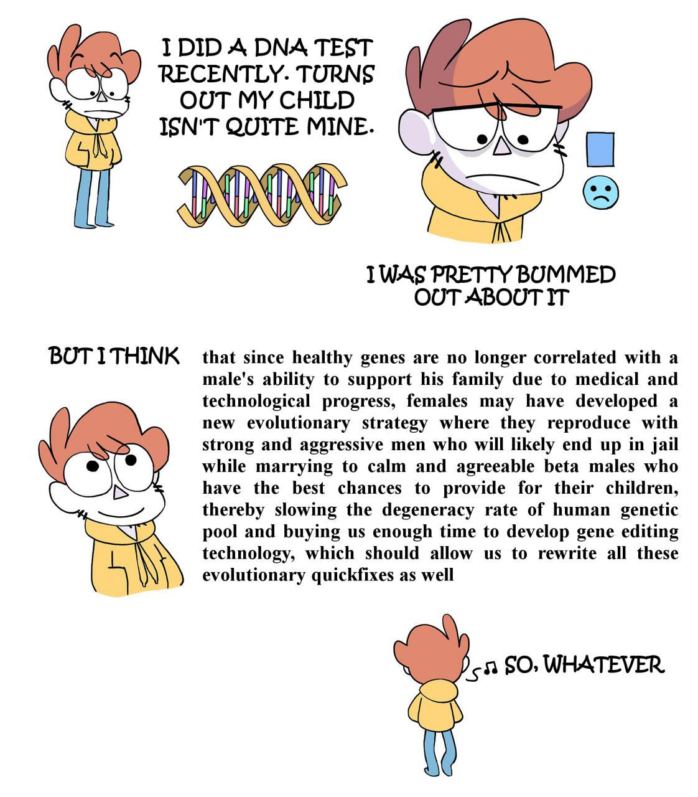

Откуда в обществе взялась нездоровая фиксация на девственности, причем именно женской? Кто и зачем выдумал телегонию?
Связь с ЗППП сразу отбрасывается, потому что они одинаково влияют на оба пола.
Для начала надо разложить по полочкам факты. Во-первых, что с телегонией?
Во-вторых, вопреки распространенному заблуждению, определить девственность женщины по половым органам не всегда может даже специалист.
Теперь можно предлагать гипотезу.
Нередко женщины используют странную стратегию: беременеют от одного мужчины, и сразу после этого выходят замуж за другого. Так или иначе, от 1% до 3% отцов воспитывают чужих детей. Быть может, проверка девственности перед браком возникла как ответная реакция на эту стратегию?
Но тогда возникает другой вопрос: а в чем смысл женской стратегии со сменой отца?
Благодаря технологическому прогрессу, здоровые гены все меньше коррелируют с успешностью мужчин, причем уже довольно давно. Если женщина хочет обеспечить своему потомству успех и здоровье одновременно, она оказывается перед дилеммой: кого выбирать в отцы? Сильные альфа-самцы агрессивны, плохо вписываются в общество и с высокой вероятностью окажутся в тюрьме или просто бросят своих детей. Те же, кто обладает хорошим потенциалом для поддержки потомства, плохо вписываются в сформированную эволюцией модель охотника-добытчика и обладают не лучшим набором генов. В такой постановке описанная выше стратегия оказывается прямо-таки гениальным решением.

Да, такое поведение аморально - с этим мало кто будет спорить. Но попытаемся посмотреть на него с другой стороны. Разве не заслуживает уважения человек, намеренно подвергающий себя опасности (коей являются альфа-самцы) даже не ради собственной выгоды, а ради своих детей и сохранения генетического пула всего человечества в жизнеспособном состоянии?
Важно понимать, что мы всегда можем списать проблемы общества на злонамеренность или тупость индивидов или групп людей, но это тупиковый путь. Мы ничего не можем с ними сделать. С другой стороны, если предположить, что на фундаментальном уровне все люди хотят, как лучше, можно строить планы по направлению их коллективной воли в конструктивное русло. По крайней мере, этим буду заниматься я.